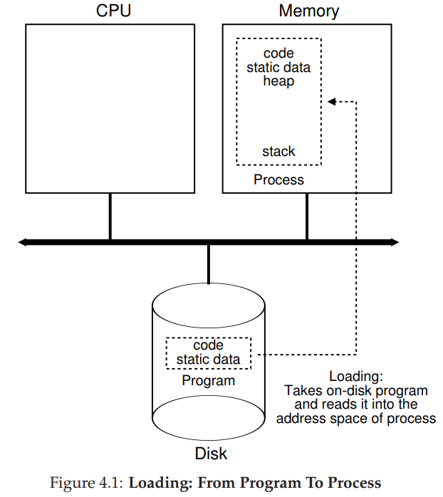
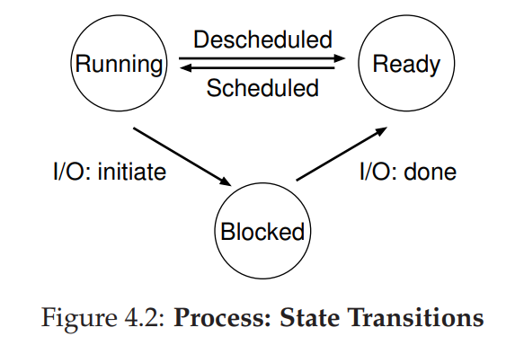
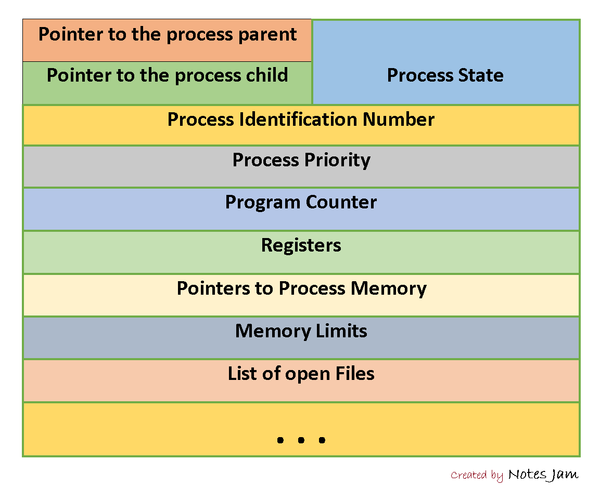
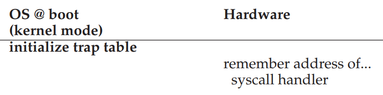
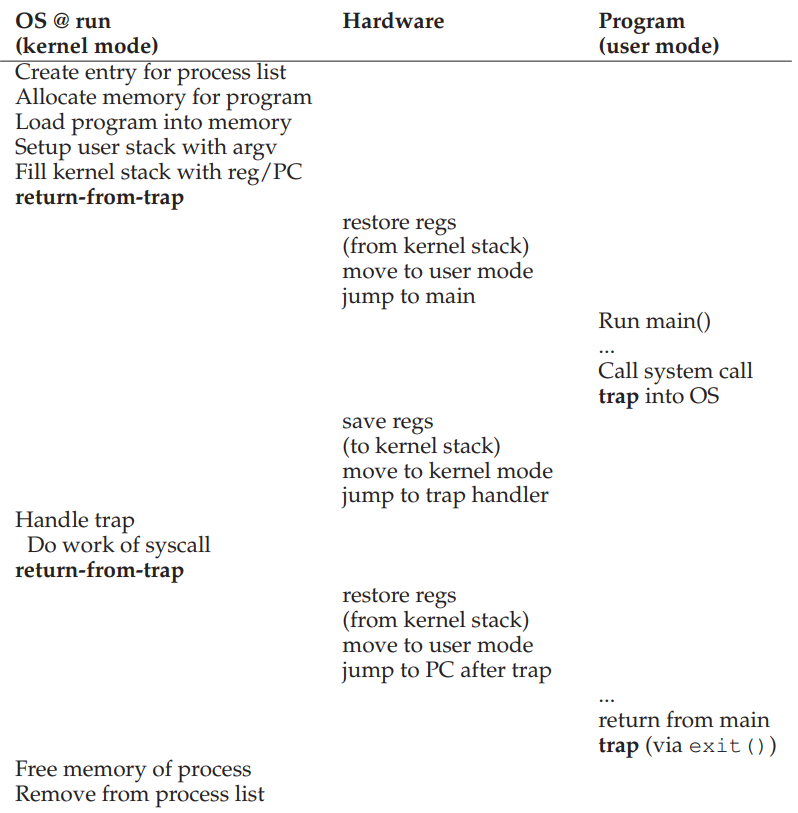
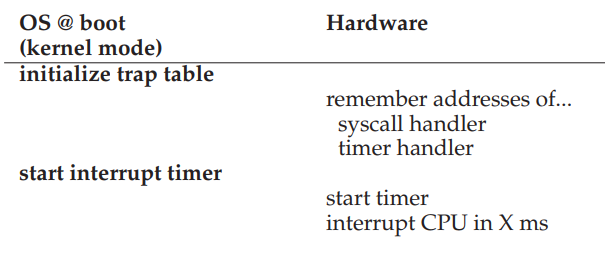
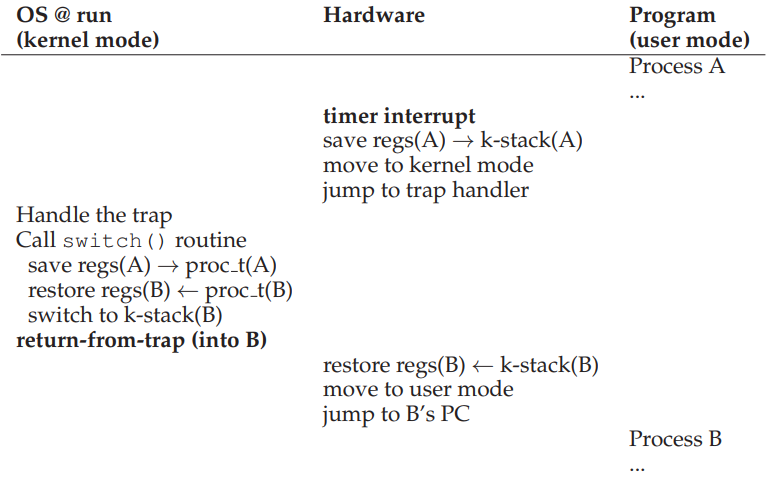

Notes for OSTEP
Operating Systems: Three Easy Pieces
Notes - Part One
Links to the book: http://pages.cs.wisc.edu/~remzi/OSTEP/
Introduction
What an OS actually does
It takes physical resources, such as a CPU, memory, or disk, and virtualizes them. It handles tough and tricky issues related to concurrency. And it stores files persistently, thus making them safe over the long-term.
Design goal
- build up some abstractions in order to make the system convenient and easy to use
- provide high performance / minimize the overheads of the OS
- provide protections between applications, as well as the OS and applications.
- strive to provide a high degree of reliability. ( run non-stop )
- energy-efficiency / security / mobility…
History of how OS developed
-
Just Libraries: a set of libraries of commonly-used functions
Batch Processing: a number of jobs were set up and then run in a “batch” by the operator
-
Protection
if allow any program read any file? -> the code run on behalf of the OS was special -> system call
Key difference between a system call and a procedure call
A system call transfer control into the OS while simultaneously raising the hardware privilege level. User applications run in what is referred to an user mode which means the hardware restricts what applications can do.
When a system call is initiated( usually through a special hardware instruction called a trap), the hardware transfers control to a pre-specified trap handler( that the OS set up previously) and simultaneously raises the privilege level to kernel mode( In kernel mode, the OS has full access to the hardware of system). When the OS is done servicing the request, it passed control back to the user via a special return-from-trap instruction, which reverts to user mode while simultaneously passing control back to where the application let off.
-
Era of Multiprogramming
desire to make better use of machine resources ->
multiprogramming: load a number of jobs into memory and switch rapidly between them for improving CPU utilization ->
don’t want one program to be able to access the memory of another program ->
memory protection & other concurrency issues
-
Modern Era
Virtualization
The Abstraction: The Process
The definition of a process -> ( informally ) a running program
A program -> a lifeless thing: sits on the disk, a bunch of instructions and maybe some static data, waiting to spring into action

Summarize a process by taking an inventory of the different pieces of the system it accesses or affects
-
the memory that the process can address
Instructions / the data it reads or writes sits in memory
-
registers、
Many instructions explicitly read or update registers. (includes some special registers like IP/SP…)
-
access persistent storage devices
Might include a list of the files it currently has open.
Process creation
-
load its code and any static data (e.g., initialized variables) into memory, into the address space of the process
from eager (Early OS: all at once before running) to lazy (Modern OS: load pieces when needed during execution)
-
allocate memory for program’s run-time stack
-
allocate memory for program’s heap
-
other work as related to I/O setup
e.g., in Unix systems, each process by default has 3 open file descriptors for standard input/output/error.
Process state in a simplified view

- running: runing on a processor and executing instructions.
- ready: ready to run but for some reason the OS has chosen not to run it at this given moment.
- blocked: has performed some kind of operation that makes it not ready to run until some other event takes place
other state:
- initial: begin created
- final: has exited but has not yet been cleaned up (zombie state)
Key data structures to track information
track state of each process -> process list
individual structure stores information about a process -> process control block:
How can the OS provide the illusion of a nearly-endless supply of CPUs
By virtualizing the CPU. By running one process, then stopping it and running another, and so forth, it can promote the illusion.
Mechanisms
low-level methods or protocols that implement a needed piece of functionality. -> how
-
Time sharing
It is a basic technique used by an OS to share a resource. By allowing the resource to be used for a little while by one entity, and then a little while by another, and so forth, the resources in question can be shared by many.
-
Context switch
Give the OS the ability to stop running one program and start running another on a given CPU.
Policies
On top of the mechanisms (high-level), algorithms for making some kind of decision -> which
-
scheduling policy
Determine which program should the OS run.
Key Process API
- The fork() system call is used in Unix systems to create a new process. The creator is called the parent; the newly created process is called the child.
- The wait() system call allows a parent to wait for its child to complex execution.
- The exec() family of system calls allows a child to break free from its similarity to its parent and execute an entirely new program.
Why the separation of fork() and exec() is essential in building a Unix shell
It lets the shell run code after the call to fork() but before the call to exec(); this code can alter the environment of the about-to-be-run program, and thus enables a variety of interesting features to be readily built.
Mechanism: Limited Direct Execution
Challenges
- performance - implement virtualization without adding excessive overhead to system
- control - run process efficiently while retaining control over the CPU
Direct Execution Protocol (Without Limits)
-
OS:
Create entry for process list -> Allocate memory for program -> Load program into memory -> Set up stack with argc / argv -> Clear registers -> Execute call main()
-
Program:
Run main -> Execute return from main
-
OS:
Free memory of process -> Remove from process list
Advantage: fast
Problems:
-
Restricted Operations
A process must be able to perform I/O and some other restricted operations, but without giving the process complete control over the system.
Approach: a new process mode
Code that runs in user mode is restricted in what it can do. In contrast to user mode is kernel mode, which the operating system (or kernel) runs in. In this mode, code that runs can do what it likes, including privileged operations.
To make a user process perform some kind of privileged operation when it wishes, the system call is provided. To execute a system call, a program must execute a special trap instruction. This instruction simultaneously jumps into the kernel and raises the privilege level to kernel mode; once in kernel, the system can now perform whatever privileged operations are needed, and thus do the required work for the calling process. When finished, the OS calls a special return-from-trap instruction to return into the calling user program while simultaneously reducing the privilege level back to user mode.
In order to be able to return correctly when the OS issues the return-from-trap instruction, it must make sure to save enough of the caller’s registers. For example, on x86, the processor will push them onto per-process kernel stack and the return-from-trap will pop them off and resume execution of the user-mode process.
How does the trap know which code to run inside the OS
Clearly, if the calling process does this by specifying an address to jump to, it will allow programs to jump anywhere into the kernel which is a very bad idea.
The kernel does so by setting up a trap table at boot time. When the machine boot up, it does so in privileged (kernel) mode, and thus is free to configure machine hardware as need be.
One of the first things the OS thus does is to tell the hardware what code to run (location of trap handlers) when certain exceptional events occur. Once the hardware is informed, it remembers the location of these handlers until the machine is next rebooted.
To specify the exact system call, a system-call number is usually assigned to each system call. The user code is thus responsible for placing the desired system-call number in a register or at a specified location on the stack; the OS,when handling the system call inside the trap handler, examines this number, ensures it is valid, and if it is, executes the corresponding code.
One last aside: being able to execute the instruction to tell the hardware where the trap tables are is also a privileged operation.
Limited Direct Execution Protocol (two phases)
In the first (at boot time), the kernel initializes the trap table, and the CPU remembers its location for subsequent use. The kernel does so via a privileged instruction (highlighted).
In the second (when running a process), the kernel sets up a few things such as allocation before using a return-from-trap instruction to start the execution of the process; this switches the CPU to user mode and begins running the process. When the process wishes to issue a system call, it traps back into the OS, which handles it and once again return control via a return-from-trap to the process. The process then completes its work, and returns from main(); this usually will return into some stub code which will properly exit the program (by calling the exit() system call). At this point, the OS cleans up.
 -
Switching Between Process
If a process is running on the CPU, this by definition means the OS is not running. So how can the operating system regain control of the CPU so that it can switch between process?
A cooperative approach: wait for system calls
In this style, the OS trusts the processes of the system to behave reasonably. Processes that run for too long are assumed to periodically give up the CPU so that the OS can decide to run some other task.
In a cooperative scheduling system, the OS regains control of the CPU by waiting for a system call or an illegal operation of some kind to take place. This passive approach is too ideal.
A non-cooperative approach: the OS takes control
Without some additional help from the hardware, it turns out that the OS can’t do much at all when a process refuses to make system calls (or mistakes) and thus return control to the OS.
The answer to how to gain control without cooperation is simple: a timer interrupt. A timer device can be programmed to raise an interrupt every so many milliseconds; when the interrupt is raised,the currently running process is halted, and a pre-configured interrupt handler in the OS runs. At this point, the OS has regained control of the CPU, and thus can do what it pleases: stop the current process, and start a different one.
Saving and Restoring Context
It is made by a part of the operating system known as the scheduler to decide whether to continue running the currently-running process, or switch to a different one.
If the decision is made to switch, the OS then executes a low-level piece of code which we refer to as a context switch. A context switch is conceptually simple: all the OS has to do is save a few register values for the currently-running process (onto its kernel stack, for example), and restore a few (from its kernel stack), and switch to the kernel stack for the soon-to-be-executing process. By switching stacks, the kernel enters the call to the switch code in the context of one process (the one that was interrupted) and returns in the context of another (the soon-to-be-executing one). When the OS finally executes a return-from-trap instructions, the soon-to-be-executing process becomes the currently-running process. And thus the context switch is complete.
two types of register saves/restores
- When interrupt occurs, the user registers of the running process are implicitly saved by the hardware, using the kernel stack of that process.
- When the OS decides to switch, the kernel registers are explicitly saved by the software (i.e., the OS) , into memory in the process structure of the process.
What happen if, during interrupt or trap handling, another interrupt occurs. (Detailed discussion is defer until second piece)
One simple thing an OS might do is disable interrupts during interrupt processing; doing so ensures that when one interrupt is being handled, no other one will be delivered to the CPU. But disabling interrupts for too long could lead to lost interrupts.
Operating systems also have developed a number of sophisticated locking schemes to protect concurrent access to internal data structures. This enables multiple activities to be on-going within the kernel at the same time, particularly useful on multiprocessors.